operanthouseのヘッダー
Kitaya lab
赤外線センサーバー検出
注意：赤外線センサーバーを使う場合は前もって操作用モニターを追加しておいてください。
もしタッチスクリーンマスクの穴が縦長で隣と距離が近い場合、カメラではマウスがどちらの穴にノーズポークをしたか見極められない場合があります。
その様な場合は赤外線センサーバー(NNAMC3460PCEV; Neonode)を用いて下さい。
これを使えばマウスがタッチした画面上の座標を取得できるのでパネルが密集している場合や上下2段に分かれている場合でも対応できます。
このセンサーバーはタッチ操作非対応のモニタをタッチ操作可能にするもので、これを画面に取り付ける事でマウスが画面にタッチするとマウスカーソルが対応する位置に動きます。OperantHouseはマウスカーソルの位置からタッチ位置を計算します。
実装作業
チャンバー前面にあるレバーモジュール用の穴は不要なのでカバーで覆います。

下のツメを引っかけ、M3x20mmネジで固定します。

センサーバーを使う場合は操作モニタが必須です。
操作用モニタの追加のページに従って操作モニタを取り付けて下さい。
次にセンサーバーを両面テープで取り付けます。曲げると壊れるので注意して下さい。
また丸で囲ったコネクタ-部は弱いのでケーブルでテンションが掛からないようにして下さい。
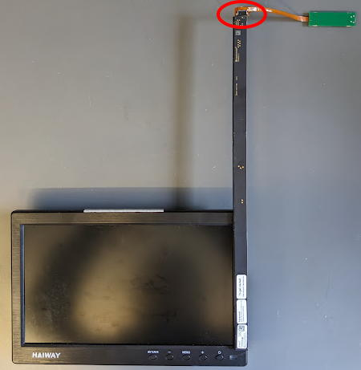
パーツの印刷ページにあるセンサーバー用のパーツを印刷してください。
3.5mmモニタースペーサーを両面テープで取り付け、モニターを本体に設置します（モニタ抑えネジもモニタが垂直になるよう再調整してください）。
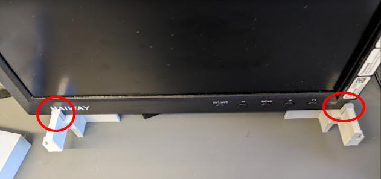
スペーサー（ChamberSpacer2mm）をチャンバーの右側のみ両面テープで貼ります。なお写真ではテスト用に10穴マスク(Mask10holesAirBar_230328.stl)を使用しています。
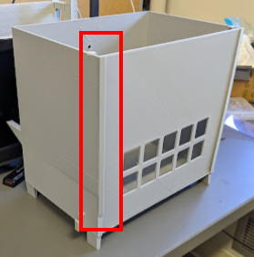
※もし5CSRTTなどマスクとモニタの距離が近い方が良い場合はChamberSpacer2mmを省略し、3.5mmモニタスペーサーの代わりに1.5mmモニタスペーサーを使ってください。
赤外線センサーバー視野に余計な輝点が入るのを防ぐためバックグラウンドプレートアームを作ります。
M2とナットでこのように組み立てます。
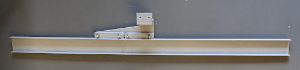
もし黒以外の色で印刷した場合はマットな黒テープをプレートに張って下さい。
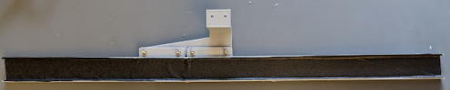
そしてM2ネジとナットで本体に取り付けます。
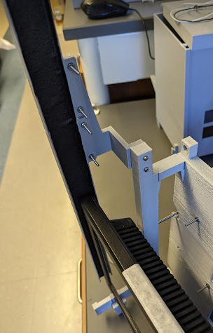
なおセンサーバーを付けなおしたい場合、無理に剥がそうとすると壊れるので写真のようにカミソリを入れて外してください。
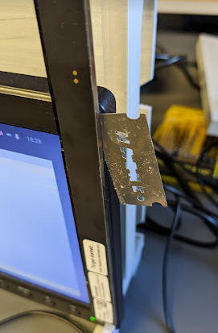
センサーバーはUSB microBに対応しているのでmicroB - TypeAのUSBケーブルでラズパイと接続して下さい。
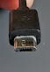 (microB)
プログラムのソースコードのTouchDetectSensorTypeを1にしてください。
これでプログラムはセンサーバーの情報を元にタッチを検出するようになります。
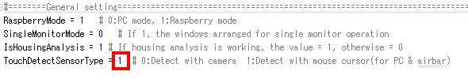
次にセンサーバーの座標調整を行いましょう。
オペラントハウスを起動してください。
画面を指で触れるとオレンジの点が現れると思います。これがプログラムが指で触れたと見なしている座標です。
このままだとずれているので調整します。
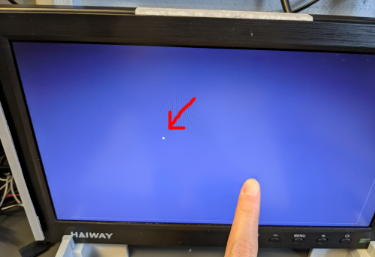
MainWindowのSettingを開いて下さい。
ここのTouchOffsetの値を変える事で輝点の位置を調整できます。
また指の動きに対して輝点の動きが小さすぎたり大きすぎたりする場合、TouchRatioの値を変更し、指の動きに輝点が追従するようにしてください。
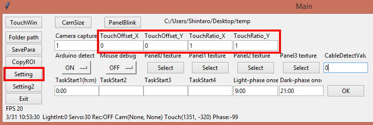
このようになればOKです。
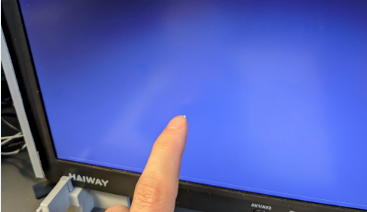
チャンバー等をセットします。
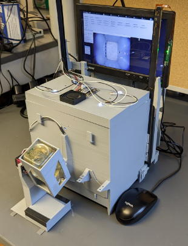
センサーバーの左側はセンサーフィールドがあるので配線などが入るとタッチを検出できなくなるので注意して下さい。
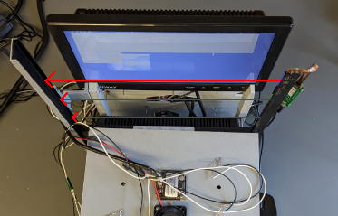
もしチャンバーをセットすることで赤外線センサーバーが誤検出してしまう場合、センサーバーが傾いている可能性があります。それを防ぐには下図のようにセンサーバーの左側をチャンバーが押すようにモニターの位置を調節してください。もしチャンバーのロックリングがスカスカでチャンバーを押し付けられない場合は写真のようにテープを巻いてロックリングの太さを調整してください。
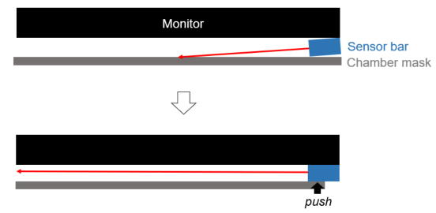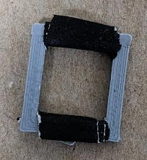
（上から見た図）
チャンバーをセットしてもちゃんとタッチを検出すれば完成です。
マウスを入れてマウスのノーズポークに反応するか試してみてください。
※もし正常にタッチを認識しない場合はトラブルシューティングをご覧ください。